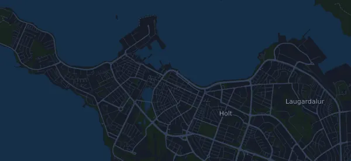

Íslandsbanki Reykjavík Marathon – Half marathon 21.1K
- Distance
- 21,1 km
- Dénivelé positif
- ↑ 234 m
- Point culminant
- 92 m d’altitude
- Terrain
- Route
- Profil
- Légèrement vallonné
Profil d’altitude
Prépare-toi avec Mila
Mila est une app avec un coach de course à pied. Ajoute une course à ton plan : le coach planifie tes semaines jusqu’au départ selon ta forme, et te donne un pronostic de temps et un plan pour l’allure, l’hydratation et l’énergie sur le parcours.

La bonne séance. Le bon jour.
Le parcours

À propos du parcours
Le Íslandsbanki Reykjavík Marathon – Half marathon 21.1K est un semi-marathon sur route de 21,1 km à Reykjavík, en Islande. Le parcours cumule 234 m de montée et autant de descente, entre 27 et 92 m d'altitude : tu finis à la même hauteur qu'au départ, mais le terrain monte et descend au fil des kilomètres. Le passage qui compte arrive à partir du km 12,3, avec une montée de 60 m sur environ 700 m, à 8,6 % de moyenne, qui t'emmène jusqu'à 88 m.
Cette côte tombe après la mi-course, au moment où la fatigue commence à se faire sentir. Lève le pied sur l'allure et cours à la sensation plutôt qu'au chrono, pour arriver en haut sans te mettre dans le rouge. Le reste du dénivelé est réparti en petites bosses sur le parcours. Il faut donc des jambes habituées à monter et capables de relancer dans les descentes.
Cette description est écrite par le coach de Mila avec l’aide de l’IA, à partir des informations du registre des courses de Mila.
Montées
| Début | Longueur | Dénivelé | Pente | Sommet (m d’altitude) |
|---|---|---|---|---|
| km 12,3 | 700 m | 60 m | 8,6 % | 88 |
Tableau d’allures
Íslandsbanki Reykjavík Marathon – Half marathon 21.1K en 1:30:00 – allure au km et temps de passage
4:16 min/km · km 5 : 21:20 · km 10 : 42:39 · km 15 : 1:03:59 · arrivée : 1:30:00
Íslandsbanki Reykjavík Marathon – Half marathon 21.1K en 1:45:00 – allure au km et temps de passage
4:59 min/km · km 5 : 24:53 · km 10 : 49:46 · km 15 : 1:14:39 · arrivée : 1:45:00
Íslandsbanki Reykjavík Marathon – Half marathon 21.1K en 2:00:00 – allure au km et temps de passage
5:41 min/km · km 5 : 28:26 · km 10 : 56:52 · km 15 : 1:25:18 · arrivée : 2:00:00
Íslandsbanki Reykjavík Marathon – Half marathon 21.1K en 2:15:00 – allure au km et temps de passage
6:24 min/km · km 5 : 31:59 · km 10 : 1:03:59 · km 15 : 1:35:58 · arrivée : 2:15:00
Les temps supposent une allure régulière du début à la fin. C’est un simple calcul, pas un pronostic : dans les montées, dans la foule et aux ravitaillements, l’allure varie.
Questions fréquentes
Quand a lieu Íslandsbanki Reykjavík Marathon – Half marathon 21.1K ?
La date de la prochaine édition n’est pas encore fixée. La dernière édition a eu lieu le 22 août 2026.
Íslandsbanki Reykjavík Marathon – Half marathon 21.1K : quelle distance et quel dénivelé ?
La course fait 21,1 km, avec 234 m de dénivelé positif et 234 m de dénivelé négatif. Le point culminant est à 92 m d’altitude.
Íslandsbanki Reykjavík Marathon – Half marathon 21.1K : à quoi ressemble le parcours ?
Le parcours est légèrement vallonné, avec 11 m de dénivelé par km en moyenne. Il compte une montée d’au moins 25 m, au km 12,3 : 60 m sur 700 m. Il va du départ à une arrivée située ailleurs. On y court sur route.
Íslandsbanki Reykjavík Marathon – Half marathon 21.1K : comment gérer mon allure ?
Vise un effort régulier plutôt qu’une allure régulière : laisse l’allure baisser dans les montées, reprends-la quand le terrain s’aplanit, et retiens-toi sur les premiers kilomètres. Les plus grandes montées commencent au km 12,3. Dans Mila, tu obtiens un plan d’allure pour ce parcours, adapté à ta forme.
D’autres courses de ce type
Autres courses à proximité
- Iceland Volcano Marathon – Full Marathon 42,2 km3 juillet 2027 · Mývatn, Islande
- Laugavegur Ultra Marathon 52,4 km17 juillet 2027 · Landmannalaugar, Islande
- Íslandsbanki Reykjavík Marathon – 10 kmDate non fixée · Reykjavík, Islande
- Íslandsbanki Reykjavík Marathon – 42,2 km (Marathon)Date non fixée · Reykjavík, Islande
Prépare-toi avec Mila
La bonne séance. Le bon jour.
Les informations proviennent du fichier du parcours et de l’organisateur. Vérifie la date, les heures de départ et le règlement auprès de l’organisateur.
Mila n’est ni affiliée à l’organisateur ou aux sponsors de la course, ni sponsorisée ou approuvée par eux. Les noms et les marques appartiennent à leurs propriétaires. Organisateur ou ayant droit ? Demander une modification ou un retrait